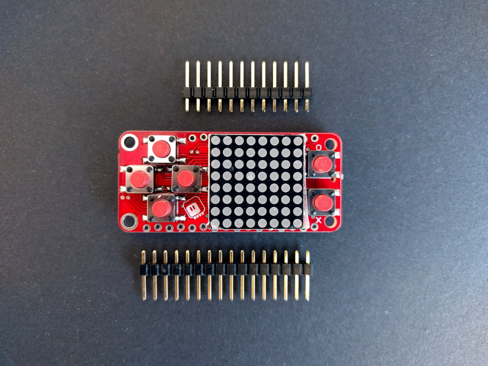

PewPew Lite Version 4.2¶
Published on 2018-05-08 in PewPew FeatherWing.
I had that version designed for quite a while, actually, and even the PCBs arrived and were lying there in a drawer — but I didn’t have time to work on them, busy with other projects. Now I moved, and found the PCBs in a box (and @Benchoff mentioned PewPew in an article), and decided to assemble them and put up on sale on Tindie. So now there is a new version of the PewPew Lite on Tinide. For now I only made ten, because that’s how many boards I had, but I already ordered some more, and more parts, so I will keep them coming.
The new version comes with the matrix display already soldered, and with staggered holes for the pin headers — so that you can simply friction-fit them without soldering. The connection seems to be good enough, but if you experience problems, you can always solder them. There is still no socket for the battery — you will have to solder the leads directly if you add it. There is simply no room for it on this board.
Also, you no longer can choose a color. They are all red. It was the preferred color anyways, yellow ones only got sold when the red ones ran out.